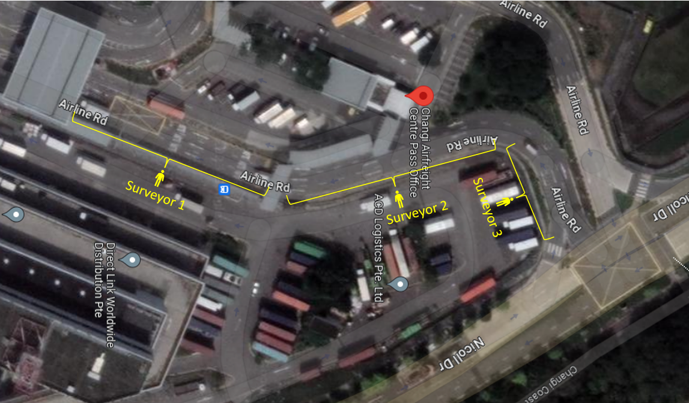

Surveyor 1: - If the truck stops in your segment, collect ‘joined the queue’. Then when the truck reaches the security check, collect ‘reached the gantry’. - If the truck does not stop and goes straight to the gantry, collect ‘reached the gantry’ only. Surveyor 2: - If the truck stops in your segment, collect ‘joined the queue’. - If the truck does not stop, no need to record. Surveyor 3: - If the truck stops in your segment, collect ‘joined the queue’. - If the truck does not stop, no need to record.
